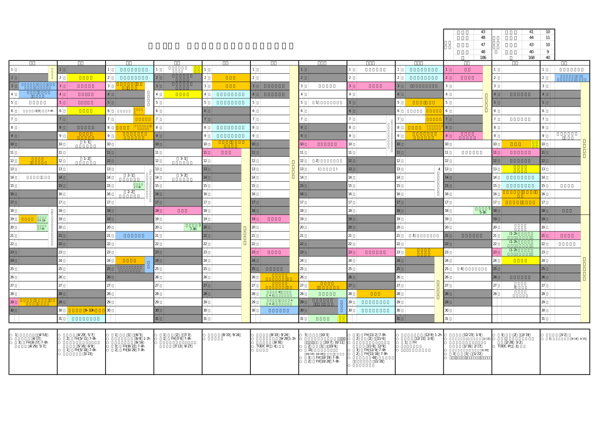
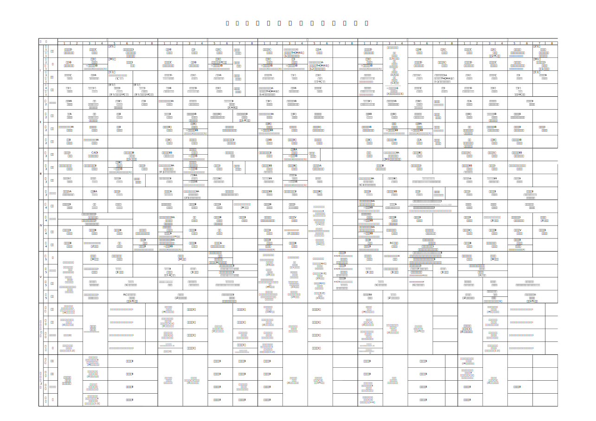

行事予定表
令和4年度 行事予定表
pdfは ここ から
時間割
令和4年度 夏学期時間割表
pdfは ここ から
学生便覧
ここ
をクリックするとBlackBoardの学生便覧のページに移動します
（BlackBoardにログインしていない場合はBlackboardに移動します）
届出様式
コロナ関係の届出様式
教務係
学生係
通学証明書」申込書
電車通学をする時
学生課に備え付けのボックスに提出又は学生係宛(gakusei-o@hachinohe-ct.ac.jp)にメールにて申請も可。
申込書提出後、翌々日午後に発行します。
健康チェックシート
各クラスで回収予定
アルバイト届(高学年用)
高学年（４，５年）がアルバイトをするとき
提出の理由が、学生便覧「アルバイトについての心得」の条件に当てはまるか必ず確認をすること。
運転免許取得届
自動車運転免許を取得したとき
自転車（登録）通学届
自転車で通学をしたいとき。
配付されたステッカーを自転車に必ず貼付すること。
※ステッカーは後日受け取りに来ること。
※年度毎に提出・更新すること。
物品等借用申込書
学校の物品を借用したいとき
電車通学をする時
学生課に備え付けのボックスに提出又は学生係宛(gakusei-o@hachinohe-ct.ac.jp)にメールにて申請も可。
申込書提出後、翌々日午後に発行します。
健康チェックシート
各クラスで回収予定
アルバイト届(高学年用)
高学年（４，５年）がアルバイトをするとき
提出の理由が、学生便覧「アルバイトについての心得」の条件に当てはまるか必ず確認をすること。
運転免許取得届
自動車運転免許を取得したとき
自転車（登録）通学届
自転車で通学をしたいとき。
配付されたステッカーを自転車に必ず貼付すること。
※ステッカーは後日受け取りに来ること。
※年度毎に提出・更新すること。
物品等借用申込書
学校の物品を借用したいとき
その他の届出様式は ここ から
各サイトのリンク
クリックすると移動します
その他
テスト段階なのでアンケートに答えていただけると嬉しいです。